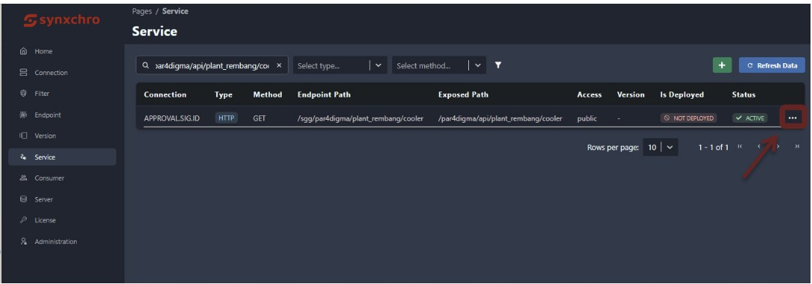
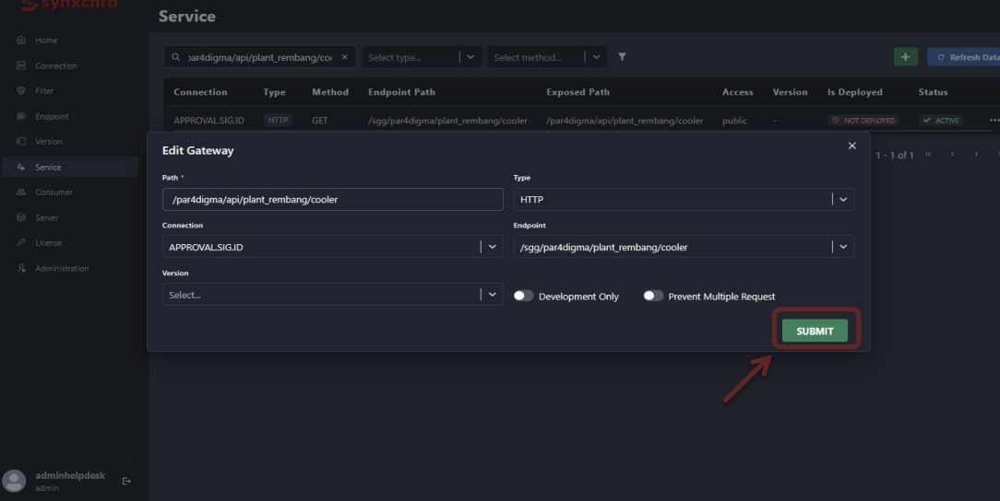
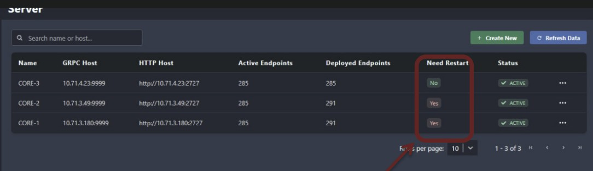
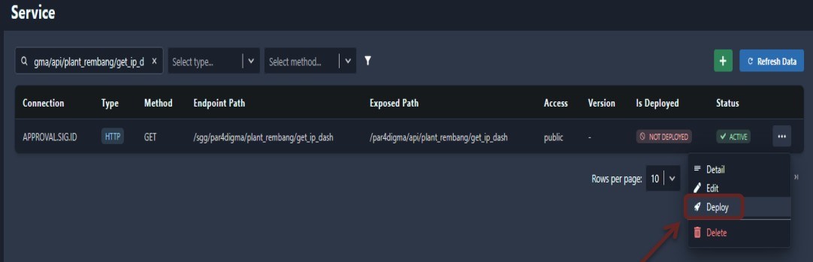
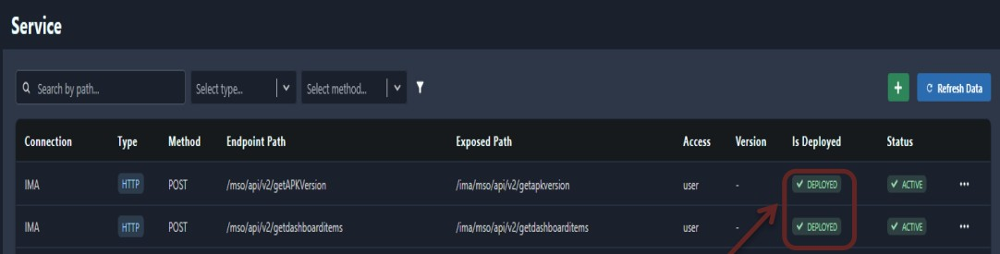

1.Latar Belakang
Undeploy dan Redeploy bukan sekadar mematikan dan mengaktifkan layanan API, melainkan sebuah keputusan strategis dalam manajemen sistem untuk melakukan optimalisasi resource pada server seperti penggunaan CPU, Memory RAM, dan DISK.
Kenapa harus di-undeploy? API yang sudah tidak aktif (idle) atau memiliki trafik sangat rendah akan terus membebani server tanpa memberikan nilai tambah (active endpoints yang berlebihan). Undeploy akan membebaskan resource ini agar dapat digunakan oleh layanan lain yang lebih kritikal.
2.Panduan Undeploy
Undeploy adalah proses menarik kembali atau menghapus API/Endpoint dari lingkungan server tempat ia berjalan (seperti production atau development).
Berikut adalah panduan langkah demi langkah untuk melakukan proses undeploy API atau Endpoint pada sistem:
-
Cari Endpoint
Masuk ke menu Service dan masukkan Exposed Path dari API yang ingin di-undeploy pada kolom pencarian. Kemudian, klik ikon titik tiga pada bagian paling kanan endpoint tersebut, lalu pilih Edit.
-
Submit Perubahan
Pada bagian pop-up edit (Edit Gateway), JANGAN UBAH APAPUN pada kolom yang tersedia, langsung saja klik tombol SUBMIT.
Catatan Penting: Jika ada endpoint lain yang juga ingin di-undeploy, lakukan proses ini (Langkah 1 & 2) secara berulang untuk semua endpoint tersebut terlebih dahulu. Jangan lanjut ke langkah 3 sebelum semua endpoint selesai di-submit pada tahap ini.
-
Restart Server
Setelah proses edit di-submit, status Need restart pada menu Server akan berubah menjadi Yes. Selanjutnya, masuk ke bagian menu Server, klik ikon titik tiga pada baris server yang sesuai, lalu pilih Restart.
Setelah restart berhasil dilakukan, status Need restart akan berubah kembali menjadi No. Pada titik ini proses undeploy telah selesai, dan jumlah Active Endpoints akan berkurang.
3.Panduan Redeploy
Redeploy adalah proses mengaktifkan kembali Endpoint terdaftar yang berstatus Undeploy untuk dipergunakan sesuai kebutuhan consumer.
Berikut adalah panduan langkah demi langkah untuk melakukan proses Redeploy API pada sistem:
-
Cari Endpoint
Masuk ke menu Service dan masukkan Exposed Path dari API yang ingin di-Redeploy pada kolom pencarian. Kemudian, klik ikon titik tiga pada bagian paling kanan endpoint tersebut. -
Proses Deploy
Setelah klik ikon titik tiga, klik Deploy untuk menjalankan proses Redeploy.
-
Verifikasi Status
Setelah proses Redeploy berhasil, status API pada kolom Is Deployed akan berubah menjadi Deployed.